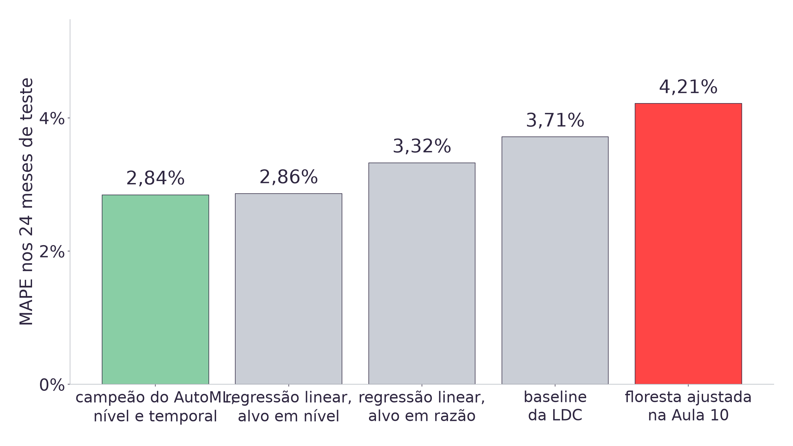
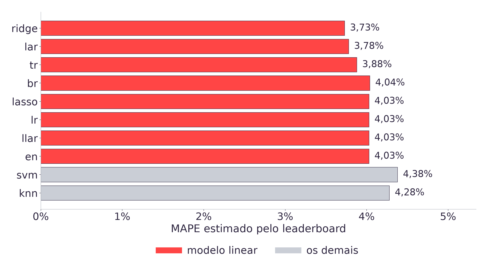
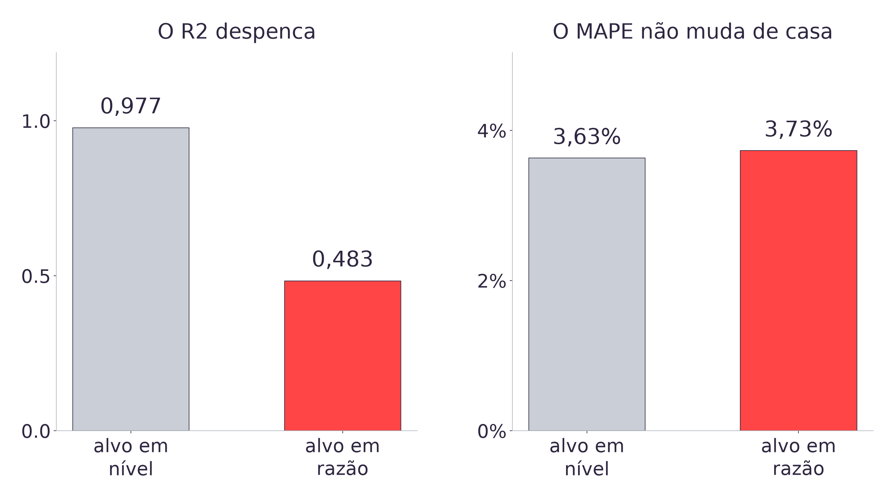
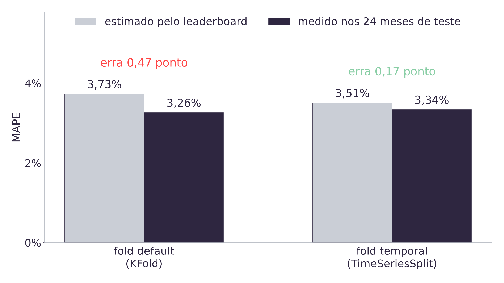

08h00 · 10h00
Autoestudo na Adalove, cinco itens: o que é AutoML, o que é PyCaret e as três práticas de classificação, multiclasse e regressão [11].
10h00 · 10h15
Daily. Cada dupla traz a feature mais influente encontrada via SHAP na Aula 10, com a leitura declarada.
10h15 · 12h00
O quadro de referência (15 min), o leaderboard (30 min), como lê-lo sem se enganar (30 min), o achado do alvo (15 min) e a amarração com a ART.7 (15 min).
A Sprint 4 fecha amanhã, 25/09, com a entrega da ART.7 [10].
GRADE = {
"n_estimators": [100, 300, 600],
"max_depth": [None, 4, 8],
"min_samples_leaf": [1, 2, 5],
}
busca = GridSearchCV(
RandomForestRegressor(
random_state=42),
GRADE,
scoring="neg_mean_absolute"
"_percentage_error",
cv=TimeSeriesSplit(n_splits=5),
n_jobs=-1)
# 4 / 5 / 600, teste 4,21%135 treinos, 27 combinações, nove segundos. A floresta saiu de 5,04% para 4,21% de MAPE nos 24 meses de teste, e a Aula 10 explicou as decisões dela com SHAP e partial dependence [12].
O trecho ao lado é o da Aula 10, sem alteração.
Hoje a pergunta é se um comparador automático, rodando em segundos, bate esse resultado. Antes de responder, falta uma coisa: contra o que mais ele deveria ser comparado [2].

Todos nos mesmos 24 meses e com o mesmo volume de treino [2]. O campeão aqui é o do protocolo temporal, pelo mesmo motivo.
O modelo que dois encontros de trabalho manual produziram perde para a baseline que a LDC já usava antes de o projeto começar [2][9]. Isso não quer dizer que as Aulas 07 a 10 foram perdidas: elas trabalharam dentro de uma escolha de família que ninguém reabriu.
A Aula 07 escolheu árvore e ensemble. A Aula 10 ajustou os hiperparâmetros da floresta. Nenhuma das duas podia encontrar um ganho que estivesse fora da família escolhida, porque hiperparâmetro não muda a família e não muda o alvo [3].
Pergunta disparada: vocês acham que o AutoML vai bater o modelo que vocês ajustaram à mão? E se bater, o que exatamente ele terá feito de diferente?
| Autoestudo, PyCaret 3 | Aula, PyCaret 4.0.0a8 |
|---|---|
setup(data=df, target="alvo") | exp = RegressionExperiment()exp.fit(X, y) |
compare_models() | exp.compare_models() |
pull() | exp.pull() |
O PyCaret é uma camada sobre o scikit-learn [5][6]: os candidatos do leaderboard são os
estimadores dele, com os valores padrão de cada um. O PyCaret estável
recusa o Python 3.12 na importação, com uma checagem
explícita dentro do pacote, e instalá-lo rebaixaria scikit-learn,
numpy e pandas para versões anteriores às dos outros dez notebooks
do acervo [3]. A linha 4.0 roda no Python atual sem mexer em nenhuma das três, e o preço é
esta tabela.
Isso já é conteúdo da ART.7: a versão da biblioteca faz parte da descrição do experimento, e resultado sem versão declarada não é reproduzível [10].

Vinte e dois candidatos, poucos segundos, e nenhuma árvore no topo [2]. Foi a família, e não o ajuste, que o comparador mexeu.
| Decisão | Quem decide | Onde isso apareceu |
|---|---|---|
| Qual família de modelo | o PyCaret | 22 candidatos, em segundos |
| Hiperparâmetro de cada um | o PyCaret, com tune_model | o que a Aula 10 fez à mão |
| Qual é o alvo | a dupla | decidido na Aula 07, nunca reaberto |
| Como validar | a dupla | dois defaults temporais errados |
| Quais features | a dupla | onze, desde a Aula 09 |
As três últimas linhas são o conteúdo do resto da aula. A literatura de AutoML separa justamente essas camadas, e trata a preparação do dado como camada à parte [7]: a escolha do alvo não está em nenhuma das duas que a ferramenta automatiza. Ela automatiza a comparação, não o protocolo, e nem sabe que o dado é uma série temporal [3].
- Abrir a seção 2 do notebook da aula e rodar o
compare_models()sobre a base de frango. - Anotar o campeão, o MAPE que o leaderboard estima para ele, e quantos segundos a rodada levou.
- Comparar esse campeão com o modelo que a dupla ajustou na Aula 10. Qual das duas famílias ficou por cima?
- Conferir quantos meses o PyCaret de fato usou para treinar, com
len(exp.X_train). O número não é 315, e a própria seção 2 explica por quê.

Mesmos modelos, mesmas features, mesma validação: só o alvo mudou. O MAPE nem se moveu [2].
O R2 é a fração da variância do alvo que o modelo explica, e os dois alvos têm variâncias muito diferentes. O alvo em nível sobe de 0,3 para 1,2 bilhão de quilogramas ao longo de 28 anos; o alvo em razão fica quase todo entre 0,9 e 1,2 [1].
Explicar 98% de uma série que cresce é fácil, e explicar 48% de uma razão que oscila em torno de 1 é outra coisa. O MAPE atravessa a troca sem se mover porque é razão entre erro e valor real, e não depende da variância do alvo [2].
É o mesmo erro de leitura que a Aula 09 tratou com o RMSE entre dois conjuntos de teste de escalas diferentes [12]: métrica que depende da escala do alvo não é comparável entre alvos.
| Posição | Modelo | R2 | MAPE |
|---|---|---|---|
| 1 | ridge | 0,4832 | 3,73% |
| 2 | lar | 0,4745 | 3,78% |
| 3 | tr | 0,4449 | 3,88% |
| 4 | br | 0,4008 | 4,04% |
| 5 | lasso | 0,3999 | 4,03% |
A quarta linha tem MAPE maior que a quinta e mesmo assim vem antes, porque a ordenação é pelo R2 [2]. Quem lê a primeira linha sem olhar a coluna está lendo o ranking de outra métrica, e é justamente a métrica que a página anterior mostrou não ser comparável entre alvos [4].
Pergunta disparada: este leaderboard foi produzido com a validação que o PyCaret traz por padrão. O que vocês acham que muda nele se trocarmos essa validação pela que a Aula 10 fixou?
| Default do construtor | O que ele faz | Onde a aula viu isso |
|---|---|---|
train_size=0.7 | separa 95 dos 315 meses por sorteio | Aula 09, o sorteio que infla o MAPE |
fold_strategy="kfold" | valida com KFold | Aula 10, 252 de 252 meses no futuro |
A dupla entregou 315 meses ao PyCaret e ele treinou com 220, escolhidos por sorteio. Os dois defaults são exatamente os erros de protocolo que as duas aulas anteriores ensinaram a reconhecer, e vêm ativados sem aviso [2][8].
Este é o default correto para dado tabular sem ordem, que é o caso da maior parte de quem
usa a biblioteca. A ferramenta não sabe que o dado é uma série temporal, e não tem como
saber: nada no DataFrame diz isso [8].

As duas escolhem o mesmo campeão. O que muda é o quanto a estimativa do leaderboard acerta o próprio desempenho [2].
- Repetir o
compare_models()da dupla passandofold_strategy=TimeSeriesSplit(n_splits=5)etrain_size=0.99no construtor doRegressionExperiment. - Anotar o MAPE que o leaderboard estima e medir o campeão nos 24 meses de teste, que nenhuma das duas rodadas viu.
- Calcular a diferença entre estimado e medido nas duas configurações. Qual das duas estimativas chegou mais perto?
- Repetir o exercício para uma segunda etapa do pipeline do case, Modelo 2 ou Modelo 3, conforme a escolha da dupla.
| Modelo, mesmas onze features e mesmo corte | Alvo em nível | Alvo em razão |
|---|---|---|
| Regressão linear | 2,86% | 3,32% |
| Floresta ajustada na Aula 10 | 5,67% | 4,21% |
A Aula 07 escolheu o alvo em razão porque a árvore de decisão não extrapola: a folha devolve a média dos valores vistos no treino, e uma série que cresce sai do alcance dela [12]. A decisão estava certa, e a segunda linha da tabela mostra que continua certa.
O que aconteceu é que ela ficou valendo para todos os modelos seguintes, inclusive para os lineares, que não têm esse problema: uma regressão linear extrapola sem dificuldade. Para ela, o alvo em razão custa 0,46 ponto [2].
Nenhuma busca de hiperparâmetro encontraria isso. A Aula 10 varreu 27 combinações de
profundidade, folha e número de árvores, e nenhuma delas muda o alvo do modelo [12]. O
espaço que o GridSearchCV percorre é o espaço de ajuste dentro de uma
escolha já feita.
O AutoML encontrou porque varre a família, e famílias diferentes têm necessidades diferentes de alvo. Ele não sabia da Aula 07 e não tinha opinião sobre razão nem nível: ele só testou os dois quando a dupla pediu [2].
A regra que sai daqui: toda decisão de preparação de dado tomada por causa de um modelo específico precisa ser reaberta quando o modelo mudar.
Uma leitura possível de tudo isto é que as Aulas 07 a 10 foram perdidas, e que bastaria rodar quatro segundos de AutoML. A medição diz o contrário.
O leaderboard que a dupla vê primeiro, com os defaults ligados, estima 3,63% para um modelo que erra 2,84% de verdade. Esse número não corresponde a nada: saiu de 220 meses sorteados e de um validador que treina com o futuro [2][8].
Desta vez o erro foi para o lado pessimista, e a dupla teria sorte. No bloco de vazamento da Aula 09 o mesmo tipo de erro empurrava a métrica para o lado otimista, que é o lado que não dispara alarme. A direção não é garantida, e quem não passou pelas Aulas 09 e 10 não tem como saber nem que existe uma direção a checar [12].
O AutoML ordena candidatos. Ele não diz se a ordenação é confiável, e essa pergunta é a que a sprint inteira ensinou a fazer.
O mesmo leaderboard dá R2 0,977 com o alvo em nível e 0,483 com o alvo em razão. O que isso diz?
O campeão do AutoML, com alvo em nível e protocolo temporal, erra 2,84%, e a floresta ajustada na Aula 10 erra 4,21%. De onde veio essa diferença?
| Aula | O que ela acrescentou ao protocolo |
|---|---|
| 09 | Corte por data, baseline declarada, métrica sem dependência de escala |
| 10 | Grade de hiperparâmetros declarada e validação que respeita o tempo |
| 11 | Varrer a família antes de ajustar, e declarar alvo, versão e critério de ordenação |
ART.7 Comparação de modelos, peso 8, fecha a Sprint 4 com review amanhã, 25/09 [10]. O melhor candidato do acervo é um modelo linear sobre o alvo em nível, e não a floresta que duas aulas ajustaram.
Na Aula 12 ele é o que vai para o Pipeline do scikit-learn e para o MLflow,
e a decisão de alvo entra no pipeline junto com ele.
- IBGE. Pesquisa Trimestral do Abate de Animais e da produção de ovos e leite: tabelas 1092, 1093, 1094, 7524 e 1086 do SIDRA.
- As nove conclusões da aula, em
tools/tests/test_automl_aula11.py. - Versão do PyCaret, escopo e os 105 minutos em
docs/adrs/ADR-014. - Material de apoio da Aula 11.
- Ali, M. PyCaret: An open source, low-code machine learning library in Python, 2020.
- Pedregosa, F. et al. Scikit-learn. JMLR, 2011.
- Hutter, F.; Kotthoff, L.; Vanschoren, J. (org.). Automated Machine Learning: Methods, Systems, Challenges. Springer, 2019.
- Kaufman, S. et al. Leakage in Data Mining. ACM TKDD, 6(4), 2012.
- Corte temporal e baseline de coeficiente fixo da LDC em
docs/adrs/ADR-008. PLANO_DE_ENSINO.md, seções 4 e 6: peso 8 da ART.7 e review em 25/09.- Autoestudos da Semana 08 em referencias/aula11.html.
- Aula 10, de onde vem o resgate, a Aula 09, do RMSE entre escalas, e a Aula 07, que decidiu o alvo em razão.